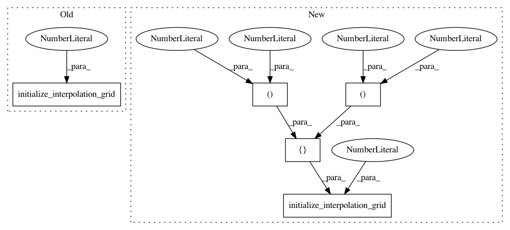

38a40828ec688be626e51ebcb1a60a54479fd997,test/functions/lazy_kronecker_product/kp_interpolated_toeplitz_gp_marginal_log_likelihood_test.py,,test_kp_toeplitz_gp_marginal_log_likelihood_backward,#,60
Before Change
rbf_module = RBFKernel()
rbf_module.initialize(log_lengthscale=-2)
covar_module = GridInterpolationKernel(rbf_module)
covar_module.initialize_interpolation_grid(5)
noise = Variable(torch.Tensor([1e-4]), requires_grad=True)
covar_xs = []
m = covar_module.forward(x[0].unsqueeze(1), x[0].unsqueeze(1)).c.data.size()[0]
After Change
rbf_module = RBFKernel()
rbf_module.initialize(log_lengthscale=-2)
covar_module = GridInterpolationKernel(rbf_module)
covar_module.initialize_interpolation_grid(5, [(0, 1), (0, 1)])
noise = Variable(torch.Tensor([1e-4]), requires_grad=True)
covar_xs = []
m = covar_module.forward(x[0].unsqueeze(1), x[0].unsqueeze(1)).c.data.size()[0]
In pattern: SUPERPATTERN
Frequency: 3
Non-data size: 5
Instances
Project Name: cornellius-gp/gpytorch
Commit Name: 38a40828ec688be626e51ebcb1a60a54479fd997
Time: 2017-08-29
Author: ruihan.wu14@gmail.com
File Name: test/functions/lazy_kronecker_product/kp_interpolated_toeplitz_gp_marginal_log_likelihood_test.py
Class Name:
Method Name: test_kp_toeplitz_gp_marginal_log_likelihood_backward
Project Name: cornellius-gp/gpytorch
Commit Name: 38a40828ec688be626e51ebcb1a60a54479fd997
Time: 2017-08-29
Author: ruihan.wu14@gmail.com
File Name: test/functions/lazy_kronecker_product/kp_interpolated_toeplitz_gp_marginal_log_likelihood_test.py
Class Name:
Method Name: test_kp_toeplitz_gp_marginal_log_likelihood_forward
Project Name: cornellius-gp/gpytorch
Commit Name: 38a40828ec688be626e51ebcb1a60a54479fd997
Time: 2017-08-29
Author: ruihan.wu14@gmail.com
File Name: test/lazy/kronecker_product_lazy_variable_test.py
Class Name: Model
Method Name: __init__